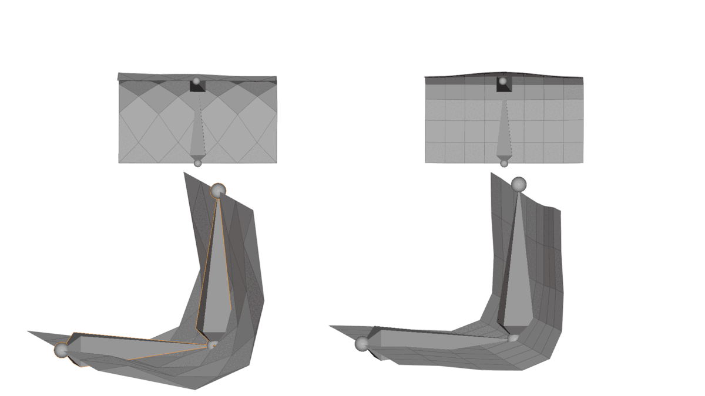
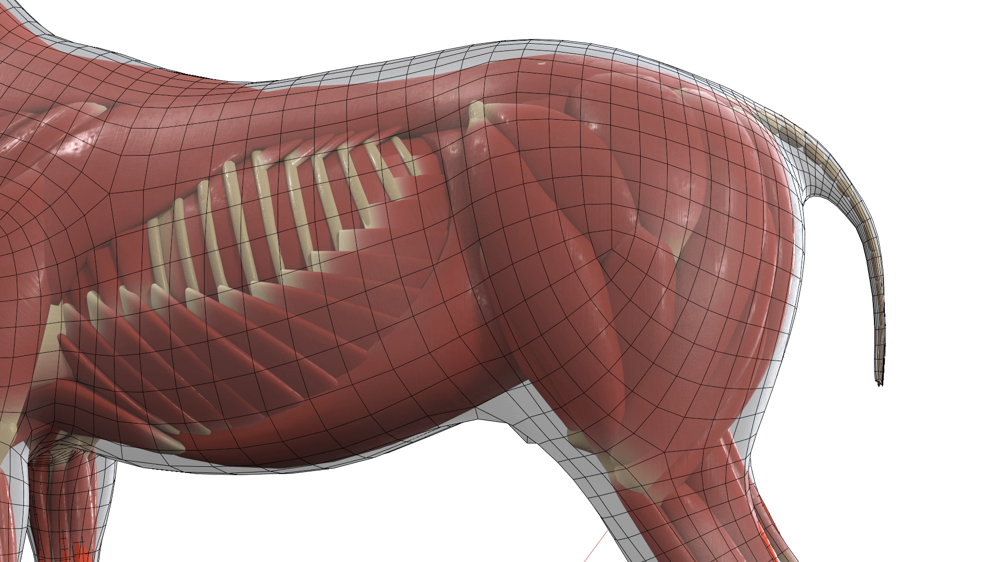
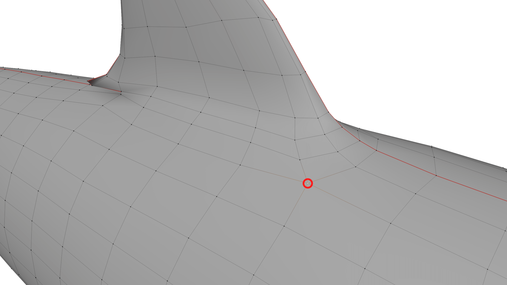
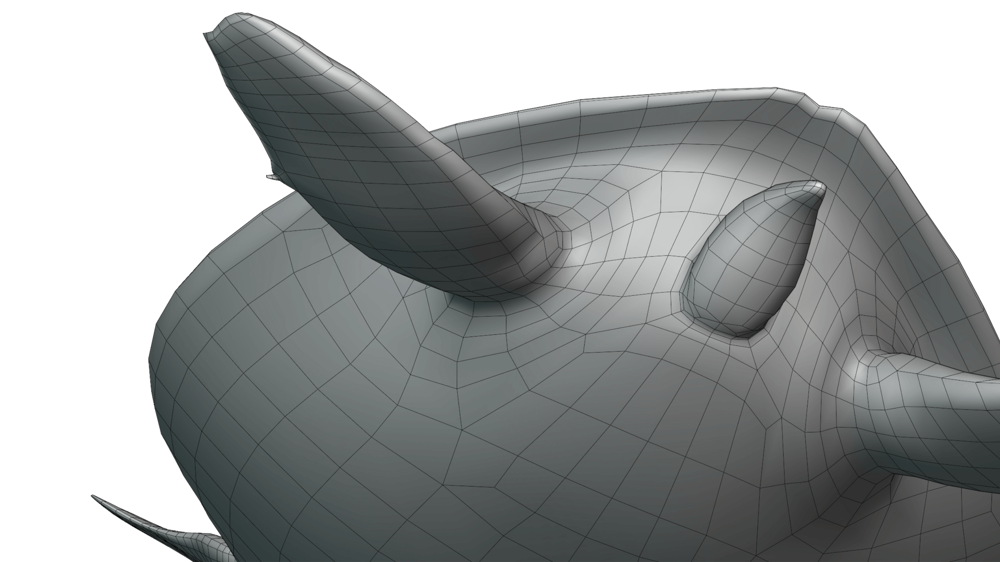
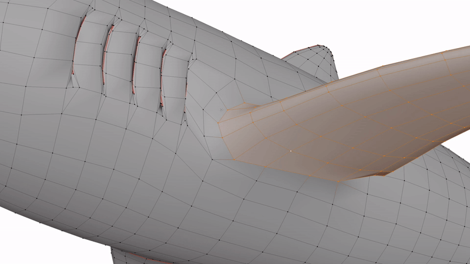
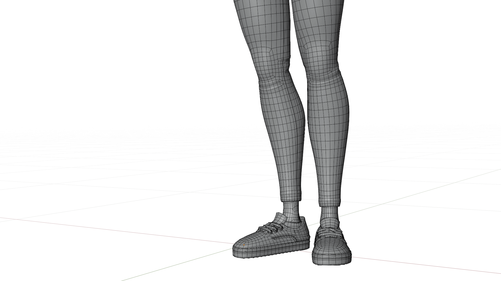
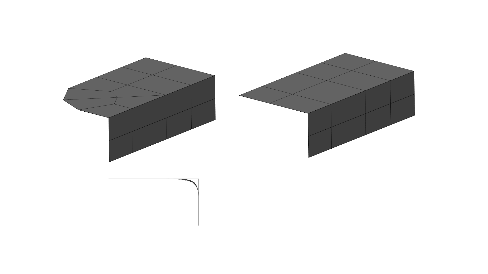
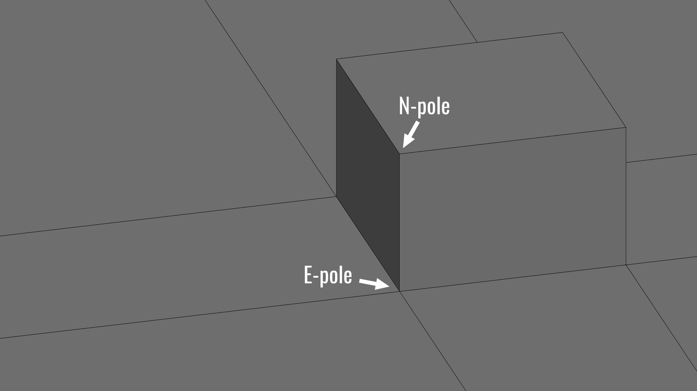

You just sculpted a new character concept, retopologized it, and added an armature…but then you move a bone and realize that your topology just doesn’t work as you’d hoped it would. Organic, stretching surfaces such as skin require carefully crafted topology that deforms well in a wide range of poses. Accounting for this variability is not an easy task, especially if you’re not skilled in animation or used to working with characters.
So, with this in mind, I’ve prepared a few tips from my own experiences of modeling for animation. With some practice, your topology may be able to work just as well when animated as it does when in a T-pose.
Align Faces with the Axis of Rotation
First up, face alignment. Aligning edge loops to the axis of animation can prevent faces from distorting and causing unwanted shading artifacts by ensuring that faces stay flat, even in extreme poses. In most cases, your topology will naturally align to the axis of animation. For example, an elbow will naturally have edge loops that flow in the same axis as movement. But paying special attention to how your loops flow can help in some tricky situations.

Notice how the faces become non-planar (flat) when they are deformed against the flow of the edge loops. At render, these faces are split into triangles that create an odd ribbed pattern countering the animator’s intent.
Keeping faces flat is the basis of why topology is important in the first place. This is why good topology in-game models is less vital (triangles are almost always flat!), and using n-gons ion modeling can be problematic. The more points you have to work with on a face, the more likely it is that you will have a non-planar surface.

Another tip for organic models is to follow the muscle structures of the deformation point you are modeling. If your topology roughly matches the underlying muscle structure, in most cases, the animated model will push and pull vertices along the same axis of the muscles.
Move Problems To Reduce Artifacts
Even the best models have areas that don’t deform well. Sometimes, the key to solving these issues isn’t eliminating them but moving them. For example, 5+ edge poles cannot be completely eliminated from a complex model, but moving them can help significantly reduce the problems poles cause. By the way, you can read more about moving edge poles in our article “Moving and Manipulating Edge Poles”

Moving problem topology to areas with less deformation can make issues irrelevant in practical use. Moving an n-gon to a flat surface of your model can make it practically invisible in your final animation. See above how the edge pole is not in the corner of the shark fin? Instead of placing the pole where it naturally would be, the pole is moved out towards a neutral position where it will not interfere with the movement of the fin.
Extend Loops around the Insertion Point

Using extra edge loops in areas with heavy deformation is the easiest way to prepare your model for rigging/animation. In transition areas and muscle insertion points, extending loops past the deformation area into the flat surface of your model can allow joints to deform more naturally and be much easier to weight in rigging. In the case above, the turtle’s fin can now rotate to extreme angles without issues because of the extra loops. Pairing this with moving poles towards flat surfaces can solve many deformation problems.

In Blender, you can easily create extra loops around the insertion point of a deformation point by using the outset tool. Select a face loop and press “I” then “O” to create a ring of faces outside the selected faces.
Match Density with Movement Areas
If polygon counts are an issue, modeling deforming areas of your model (e.g., a character model’s face) with a higher density than non-deforming areas can help to reduce polygon counts without sacrificing good topology. For example, using edge loop reduction techniques, you can add density to your model’s key features and terminate edge loops before less key areas. While modeling with even mesh density can be a virtue, varying mesh density can be a lifesaver when working on heavy models.

Look how the density above increases in the knee and ankle. This ensures that when the leg bends, there isn’t excessive stretching or artifacting.
Have any tips of your own? Leave them in the comments below! Also, If you enjoyed this post, please consider supporting the site on Patreon to help pay for some of the costs of running the website!
Today we’re going to take a look at a very common modeling task modeling hands. Hands are one of the most complex shapes on the human body to model. An arm is one thing, but another five appendages? Topology and mesh density can quickly get out of hand (pun intended). Furthermore, animated ready hands must be ready to deform in almost any shape while still looking good.
So without further ranting, here’s a couple tips for modeling your next hand. Once you reach the bottom, you can also download the final hand with loop flow notes using the Sketchfab link.
Reference…Reference….Reference!
Organic forms, especially those we’re most familiar with, require acute attention to reference. It’s easy to take as granted that we know what a human hand looks like, but once you begin modeling, it’s easy to assume forms and end up in the uncanny valley. Even when working with base meshes, reference is a necessity. Base meshes are all about recognizing the major forms of a model, that means paying attention to muscle and bone structure is just as important at this step as it is for sculpting or texturing.
For example, while working on this post, I initially modeled the back of the hand with inset loops near the knuckles, but after looking at my own hand, I realized that it would be more accurate to have the loops extend downwards across the hand because the whole area deforms in certain positions.
TLDR: Check your reference…and then check it again.
Identify Primary Loops
The human hand has a lot of primary loop locations. This is why it’s a safe bet to start identifying these before you build out much of the model. A great way to do this is by using the grease pencil tool over your reference image. Mark out anywhere that should have clean loops of edges. For example, the wrist, fingers, knuckles, and thumb pad. Marking these will help you avoid redoing work correcting edge loops that flow in the wrong ways.
Once you’ve marked your main loops build them out using geometry. You can automate this using something like Retopoflow. Remember to check your edge count in loops. Each finger should have the same number of loops. Sticking to multiple of 4 for loops is also general good practice. Pay special attention to the loop count of the wrist; 16 is generally plenty and will be at least close to the loop count of whatever arm you attach.
Do the Easy Stuff First
Next, use the loops you made to fill in the areas between them. If you see a problem coming at a loop transition, leave it and work on filling as much clean topology as you can. If you work too much to make a good transition area, only to need to fix it again, modeling can get frustrating very quickly. You’ll likely see most problems at the base of the thumb and between the fingers.
Fix Tricky Loop Transitions
Now you should have enough topology to know what your transition points need to be like. Now your topology skills really come into play. There is no fix all solution to transition points, but these principles are good guides: First, check your loop flows. The easiest way to get in a mess is linking one end of a loop to the wrong point on the opposite end. Second, learn loop reduction flows. These will be essential to ending flows so you don’t end up with dozens of edge loops at the wrist. And Lastly, persevere. Sometimes you just gotta keep trying new things until it works. Don’t be afraid to delete topology.
Make Your Rig Happy
Last, but not least, add deformation areas and make your rig (or rigger) happy. Deformation areas (marked in blue) help topology stretch properly in extreme positions. The best way to add these areas is to outset a grouping of faces by pressing I then O and adding a small loop around the area that needs extra geometry. Generally, the tops of joints need the most extra geometry. in some cases, it can be easier to add more loops instead, but this can also create extra to geometry to compress inside the joint.
Below you can see the final result and the main edge flow highlighted. You can also download the model from Sketchfab here.
If you enjoyed this post, please consider supporting the site on Patreon help pay for website costs and give me motivation to keep writing guides!
For some models, creating bevels is a simple as adding a bevel modifer. But for other models, more complex methods are needed. One of these methods is creating transitions between two bevel widths. Be it a car dashboard or a piece of furniture, bevel transitions are everywhere. This short guide will show you the most optimal ways to create transitions between bevel widths.
Method #1 - Quick & Dirty
First, the quick and dirty method. If you’re in a pinch or if you’re modeling something that’s unlikely to be viewed close up, this is the method to use. This method involves using edge ceases to sharpen at variable levels. In this example, the sharp edge has a crease of 1.00 and the wider bevel has a crease of 0.00. To adjust the crease of an edge in Blender, use SHIFT-E.
Method #2 - Smooth Bevels
This method is a bit more complex and involves using the bevel tool (CTRL-B) to separately bevel each bevel width then combining the two bevels by cleaning up the merge point in step three. This method also using holding edges instead of edge creasing to have more control over the bevel profile.
Using this type of transition is perfect for important bevel transitions and high-poly modeling where model density is less restricted.
Method #3 - Sharp Bevels
This last method is for sharp chamfered bevels. Using creases and single segment bevels, it’s easy to create very clean transition points. The important step here is to merge the extra vertices in step four to restore the edge flow.
That concludes this brief intro to variable bevels! If this guide was useful to you, then please consider sharing it or contributing to the project’s Patreon page.
Let’s talk about Edge poles, those famously aggravating little points on a mesh that cause so many headaches for 3d artists around the world. Why are they so terrible? What can we do about them? And when are they actually good to use?
Edge poles are generally considered to vertices with more or less than 4 connecting vertices. On a polygon mesh, this means vertices with either 3 connecting edges or 5 or more connecting edges. Poles most commonly form when triangles or n-gons appearing in models, hence why such polygon types are generally avoided in 3d modeling. Triangulated meshes (such as game models, or photogrammetry models) are most notably known for consisting almost entirely of edge poles with very few 4-edge vertices, the same applies to meshes with large numbers of n-gons.
The Problem of Poles
So you might be wondering, why do edge poles get such a bad wrap? The primary reason is that an edge pole creates pinching around its perimeter when subdivisions or smoothing is applied. This is why a cylinder with a triangle cap looks so odd when applying subdivision surface smoothing. The example below shows why this can be a problem on curved surfaces. The cross-section view shows that the corner that contains a pole will yield an uneven surface when subdivisions are applied.

Despite the pinching created by poles, they are an important part of modeling and a necessary component for many modeling techniques and shapes. So this the rest of this post will attempt to explain a bit more about poles and how to use them effectively.
E-poles
E-poles are the most common pole type and consist of five edges intersecting at a single vertex. E-poles are most notorious for appearing when extruding faces on a mesh and for forming unwanted flat “corners” within the topology when edge loops meet or turn. E-poles are also what form concave corners in hard surface models.

N-poles
N-poles are vertices that consist of three intersecting edges. This type of pole is far less common, but often appearing around poles or inset parts of a mesh. In organic modeling, this pole is often known as the “nose” pole, since N-poles are often necessary for modeling the base of the nose. N-poles are also what form the corner of a cube or most other convex corners.
Other Pole Types
Poles with six or more edges are generally considered to be bad practice and almost never show up in good topology. Again, on flat surfaces, 6+ edge poles can be acceptable if absolutely needed, but this is a rare case.
When are Poles Ok?
You’ve probably come to realize that poles are inevitable, and required for proper topology. But when exactly do we know when a pole should or shouldn’t be where it is? It all comes down to curvature. If a pole is changing the curvature of the surface, then it should be removed or eliminated. This usually happens on corners or any other areas of extreme curvature. Of flat surfaces, less visible areas, or areas with a slight curvature like a cheek of a face are areas where poles are least destructive and are where you should try to place or move poles to.
Moving Poles: The Great Compromise
One of the most requested topics I’ve received is how to move poles. And for good reason, poles can be very difficult to move without modifying topology in an adverse way. In almost every circumstance model density must be changed to accommodate a change in pole locations, causing the topology to quickly become very sloppy if multiple edges need to be moved. This is why the best advice for moving poles is to not move them wherever possible by planning your pole locations is advance. It’s pretty easy to judge where a pole will form by looking at the major flows of a surface and where they intersect. That intersection is where a pole will appear. Luckily, it’s up to you where that intersection happens.
But, in the case that you do end up with a pole that needs to be moved, there are a number of options for moving poles depending on your needs. Every situation requires a slightly different approach, however, there are some general techniques for 3 and 5-edge poles that can be a good basis for moving a pole. Something to remember, whenever a pole is moved, one edge loop must be removed in the direction the pole is being moved, while another is subtracted from wherever the pole came from. The reason for this is that the edge loops must be redirected around the new location of the pole. Otherwise, an n-gon will appear.
That’s all! I hope this short primer on edge poles has given you a better understanding of how to use them effectively. If this guide was useful to you, then please consider sharing it or contributing to the project’s Patreon page.
If you’ve ever tried to model a car or any other shiny object, you know how hard it is to get perfect reflections outside of using CAD programs. It’s tedious and virtually impossible to get 100% right.
With that in mind, I thought I’d talk about modeling specifically for these types of surfaces and the best ways to make it as painless as possible. Regularly used subdivision modeling methods rarely have the level of precision needed to make these kinds of surfaces, so I’ll be covering how “hack” sub-d modeling to best apply A-class surfacing ideals to the practical methods of subdivision modeling.ideals to the practical methods of subdivision modeling.
Evenly and Sparsely Place Loops
Even spacing, while often unavoidable without adding useless edge loops, is a goal worth pursuing. Even spacing ensures curvatures stay correct by not introducing any irregular areas that might produce artifacts.
Because of the way subdivision surfaces smooth and subdivide, even adding an extra edge loop that “seems” to follow the surface of your model can cause minute distortions to reflections if placed incorrectly. This is why it’s best to keep the mesh as minimal as possible, for as long as possible. Keeping the mesh simple so you can understand what your topology is doing.
Minimize High-Density Edge Poles
Edges poles are well known for creating mesh artifacts and distortions. But they are often unavoidable in certain areas without sacrificing another part of the model. That’s why it’s best to move poles to areas of less importance or curvature to make them less noticeable, rather than detrimentally removing them. Remove any unneeded poles if possible, but fall back to moving them if you can’t remove them.
A big request has been for a post covering moving poles, so I’ll hopefully be working on a full guide covering this soon.
Make Curvature Contradictions After Finalization
Curvature contradictions, meaning things like door handles on a car, or buttons on a control panel can cause major problems with topology and reflections. The main problem is that these contradictions can almost never be isolated without either large amounts of holding edges or creasing with very high mesh density.
To solve this problem, it’s best to add contradictions after one or two levels of subsurface smoothing have been applied. This way, the curvature is finalized before it can be altered negatively by any additional edits.
Don’t use Holding Edges when Possible
While holding edges are a great thing, they almost always cause distortion on some part of a model by adding edges along the entire length of the area the loop runs. The alternative is to use creasing when possible.
Creasing, especially at high subdivision levels has almost the same effect as holding edges and can create topology that is much cleaner and easier to manipulate because it uses the extra subdivision of sub-surf.
Non-Destructive Sub-Surface
One benefit of non-destructive subdivision surfaces is that you can preview how the surfacing will look without finalizing it. This is an invaluable benefit of sub-d modeling that other modeling methods often lack.
Previewing how subdivisions will affect your topology is vital to making sure there are no distortions in your mesh. Because like I’ve said before, you never really know how it will be transformed by sub-d smoothing.
Use high contrast Materials during Modeling
One of the main difficulties in creating perfect reflections is previewing those reflections inside modeling apps. The default Matcaps built into 3d viewports are too low contrast to notice minute imperfections. That’s why using high contrast Matcaps or patterned reflection maps is a good idea for noticing things one normally wouldn’t.
Depending on your software of choice, you might have a Matcap viewer available or some other way to change the viewport material. If all else fails, a fallback is to render a preview of your mesh with a checkered map set as your environment texture.
That’s all! I hope this gave you some helpful tips for reducing mesh artifacts. But before I conclude, I want to thank CGcookie for graciously sponsoring this post. CGcookie has some fantastic modeling coursework that’s defiantly worth checking for both beginners and advanced artists.
So if you’re interested, check them out by clicking the banner below. :)
An essential skill of modeling is knowing how to properly reduce the number of edge loops from a high mesh density to a low density. This involves some tricky topology. So let’s have a look at how to best reduce the various flow types.
2-1 and 4-1
The 2-1 and 4-1 flows are the trickiest to handle. Most methods involve substantial distortion of topology and/or the addition of more loops to the left or right of the intersection.
So, after experimenting with different forms, the results above seem to offer the least mesh distortion despite containing Tris and N-gons.
I apologize to any quad purists out there for the lack of quads. ;)
3-1, 4-2, and 5-3
The three of these flows are very standard flows that involve redirecting the edge loops back towards their origin. This trick is very effective. and maintains almost perfect topology in most situations.
As you can see, the 4-2 and 5-3 flows follow the form of the 3-1 flow. With the only differing factor being the number of center loops. This shows just how adaptable this method of reduction can be.
Hope this helps! if so, be sure to hit one of those share buttons below!
Also, if you’re interested in supporting the content here on Topology Guides, please consider making a small donation to my Patreon page to help with the creation of new content!
I’ve talked quite a bit here on Topology Guides about integrating shapes into meshes. But until this point, I’ve overlooked a surprisingly adequate workaround to traditional modeling practices for integrating shapes onto a surface.
This workaround is the process of using “decal” meshes that hover over the surface of a primary mesh, yet seem to be fully integrated once shaded. The method I’m about to show you works mainly for protruding convex parts of an object. Such as a door handle or a button on a workstation.
For this process, all you need is the “decal” object you want to integrate, and the primary “surface” mesh.
Note: For smaller or concave decals, I highly recommend checking out DECALmachine. It’s a fantastic add-on that’s been spreading like wildfire in the Blender community the past few months.
Start Simple
In addition to the decal and surface we’re using, we’ll also need a 2d lattice roughly in the shape of the bottom of the decal. Along with that, be sure that the decal has a bottom rim with some type of bevel to make sure there’s a smooth transmission between the decal and surface in the later stages.
Once you have all these elements, lay them out in a similar fashion to the screenshot above before you move on to adding vertex groups.
Vertex Groups
We’ll need two vertex groups to get the decal working properly. One for the very outer rim of the decal, and another for the larger area around the base of the decal.
We’ll use these groups later for deforming the decal to the surface using a variety of methods for mesh deformation.
Using Lattices
After laying out the lattice and decal over the surface, you can start to use the lattice to shape the decal.
Start by applying the lattice to the decal using the lattice modifier. Now the lattice has total control over the decal, which isn’t quite what we want, so we’ll need to use the larger vertex group we created earlier to make sure the lattice deforms only the bottom areas of the decal.
After the decal is joined to the lattice, apply a shrinkwrap modifier to the lattice with the surface as the target. This should give a rough version of the final outcome. But don’t quit yet, there’s still a lot of perfecting to do.
Perfecting the Shape
To perfect the surface, the outer rim still needs to be adjusted. Otherwise, at certain low viewing angles, we can sometimes still see a slight gap between the two surfaces. Of course, if this gap isn’t visible on whatever model you’re using, then you can go skip this.
To adjust the rim, apply a shrinkwrap modifier to the decal with the surface as the target. Next, select the rim vertex group to make sure only the rim is affected.
Correcting Normals
At this point, you should have an almost perfect mesh uniform to the target surface, apart from some shading artifacts. If not, come back to this step later and have a look at the troubleshooting tips below.
If it all looks good, all that’s left is to apply some normal editing hacks to smooth out the shading. Again, this is also a very picky detail so you might be able to get away with skipping it if you’re not doing close-up renderings.
Start by adding a Data Transfer modifier with the surface as the target. Then you can set the settings as shown in the screenshot and click Generate Data Layers near the bottom of the modifier.
To briefly explain what’s going on here, the data transfer modifier can copy the normal information from the surface model and apply it to the decal. Which makes the Render Engine (or viewport) view the two models as a seamless surface. Of course, this only works if the two meshes are approximately in the same location, hence the need for the previous steps in this guide.
Troubleshooting
If everything went smoothly, great! If not, don’t worry, here are some tips that might help.
Origin Points
Having the origin points of the lattice and decal in the same spot is best when possible. Otherwise, sometimes the decal will not deform with the lattice correctly.
Applying Transforms
Make sure to apply the scale of all objects using CTRL-A.
Setting the Rim Shrinkwrap
If you notice a shadow under the decal, it’s most likely because there’s still a small gap between the surfaces. Adjusting the offset of the shrinkwrap can often solve it. This applies to intercepting pieces as well.
Tweak Data Transfer
If you’re having problems with the edge of the decal shading properly, try tweaking the settings of the Data Transfer modifier. Often times its normals that cause seemingly unsolvable problems. Don’t overlook them.
Still having Problems?
If you’re still having problems, I’ve uploaded an example file herethat has all the settings and modifiers laid out. So if all else fails, you can consult the file for help. ;)
That’s it! I hope this guide was useful. If it was, please consider making a small per-post donation to my Patreon page to support my work here on Topology Guides. I’d really appreciate it. :)
Today I’m going to be showing how to model what I called a chamfered cut, meaning a chamferd section of an edge, often found on hard-surface metal parts.
So without further introduction, let’s get to it.
1.
Start off with adding two edge loops to define the area that you want to chamfer.
2.
Next, bevel the edge created by adding the two edge loops to create the basic chamfered shape.
3.
Connect the two points of the triangles near the corners of the shape to make an edge loop down the center of the chamfered area. Also, connect the other two points of the triangles down to remove the n-gons from the model.
4.
Bevel the outer corners of the chamfered area a small amount to make sure the edges are held if subdivisions are applied.
5.
Add more holding edges to the outside to keep the shape contained, then add sub-surf if desired.
This time I’m going to show how to model a chamfered circle. I spent a fair bit of time on this one, trying to find a simple method for modeling the shape, and I think I found the simplest one. It’s not ideal (a few ngons), but the other methods I’ve found to be overly complex with too little payoff. Let me know if you have an even better method because I’d love to see it. 🙂
1.
Begin by creating a circle with a low edge count, in order to give a chamfered look. Then add a loop between each edge for the next step.
2.
Next, pull the middle top vertices up in order to begin creating a rounded top.
3.
Now bevel the center loop to complete the rounded look. Feel free to use as many segments as needed. Next, add a new circle above the mesh with the same edges count as the loops of the main mesh.
4.
The two loops can now be bridged by using the “bridge edge loops” tool in the edges menu (CTRL+E)
5.
Next, select the corners of the chamfered section and bevel them. Be sure not to bevel the top edges, so that the circular top maintains its shape.
6.
The last step is to add holding edges to all the sharp corners and add sub-surf as desired.
This shape is pretty simple. but a useful one if your modeling mechanical or sci-fi things with grips or ridges. So let’s get to it!
1.
Start by modeling the curved edge you need to incorporate the ridges into. I recommend modeling separate to your main model so that you can tile it later and then add it back in.
2.
Add two loops to define the inset and outset parts. If you want the inset and outset ridges to be the same width, then make sure the middle section is the same width as the two outer sections combined.
3.
Cut out the area you’d like to be inset.
4.
Add a quad to the first four vertices along what will be the wall of the inset. Make sure to model this quad to be properly aligned how you
like it, as the rest of the inset will be based upon this quad.
5.
Fill in the rest of the inset using the fill tool (F key), or using the F2 add-on for Blender to make it even quicker.
6.
Add holding edges or mean creases to hold the shape, then apply sub-surf. At this point, you can easily tile the ridges using an array and reintegrate it into your mesh.


 To solve this problem, it’s best to add contradictions after one or two levels of subsurface smoothing have been applied. This way, the curvature is finalized before it can be altered negatively by any additional edits.
To solve this problem, it’s best to add contradictions after one or two levels of subsurface smoothing have been applied. This way, the curvature is finalized before it can be altered negatively by any additional edits.
 Creasing, especially at high subdivision levels has almost the same effect as holding edges and can create topology that is much cleaner and easier to manipulate because it uses the extra subdivision of sub-surf.
Creasing, especially at high subdivision levels has almost the same effect as holding edges and can create topology that is much cleaner and easier to manipulate because it uses the extra subdivision of sub-surf.
 Depending on your software of choice, you might have a Matcap viewer available or some other way to change the viewport material. If all else fails, a fallback is to render a preview of your mesh with a checkered map set as your environment texture.
Depending on your software of choice, you might have a Matcap viewer available or some other way to change the viewport material. If all else fails, a fallback is to render a preview of your mesh with a checkered map set as your environment texture.


 See the final result on Sketchfab:
See the final result on Sketchfab: